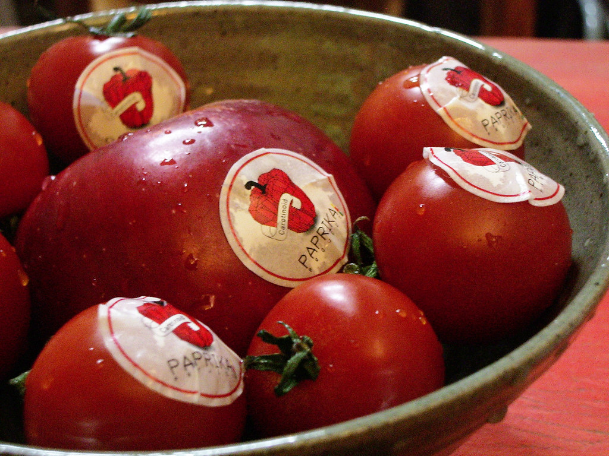

백기영 - 파프리카 프로젝트
파프리카 프로젝트는 우리의 몸을 형성하는 먹을거리 문제를 다루는 생물학적, 유전공학적 한국사회 연구프로젝트이다. 이 프로젝트는 광주비엔날레 기간동안 재래시장인 광주의 대인시장에서 오픈되었고, 광주 대인시장에는 노란색을 기반으로 하는 피코시안닌(Phycocyanin) 가게가 열리고 있다. 안양의 석수시장에는 카로티노이드(Carotinoid) 가게인 빨강가게와 화성의 사강시장에는 초록색의 클로로필(Chlorophyll) 가게가 색깔에 따라 열린다. 이 가게에는 점원들이 있어 과일과 야채를 판매하게 되는데, 모든 야채와 과일들은 해당 색깔의 가게에서만 살 수 있다.
파프리카 프로젝트는 과일과 야채가 보유하고 있는 천연색소를 중심으로 새로운 형태로 확산되고 있는 생물학적, 유전공학적 기술의 변화를 연구하는 프로젝트이다. 오늘날 유전자 변조 농산물로 대변되는 GMO의 대량보급은 개발도상국을 중심으로 인구문제와 식량난을 해결하는 대안으로 환영받고 있지만, 유전자 공학의 보급을 통해 우리는 조작된 자연, 개조된 식량들로 우리 몸을 만들어가고 있다. 이 프로젝트는 과일과 야채 등의 먹을거리 생산에 주로 사용되는 천연색소 유전자의 공학적 활용을 시각예술의 형태로 접근하여 연구하고 이것이 신체에 미치는 영향을 점검하는 프로젝트이다.
Kiyong Peik - Paprika Project
Paprika Project is a project looking into Korean society from biological and genetic engineering perspectives by dealing with foods which people consume daily and therefore make up our body. This project is exhibited through 'Yellow Store', a fruit and vegetable store in Dae-in Market, one of traditional markets in Kwangju, during Kwangju biennale. Along with 'Yellow Store', 'Red Store' selling Carotinoid in.
Seoksu market in Anyang and 'Green store' selling Chlorophyll Paprika in Sagang market in Hwaseong will be open as a part of this project as well. In each store, People can buy yellow fruits and vegetables only in 'Yellow Store', red ones only in 'Red store', and green ones only in 'Green Store' respectively.
Paprika Project is interested in the development of biologycal and genetic engineering technology which brings new colors to fruits and vegetables. Nowadays Genetically modified organism(GMO) is appealing as one of effective solutions to overpopulation and thereby shortage of food in developing and underdeveloped countries. However, it also affects our body which is built up by consuming these modified foods from 'modified' nature. This project raises issues of applying nature colors to foods genetically and understanding how genetically applied nature colors affect our body.